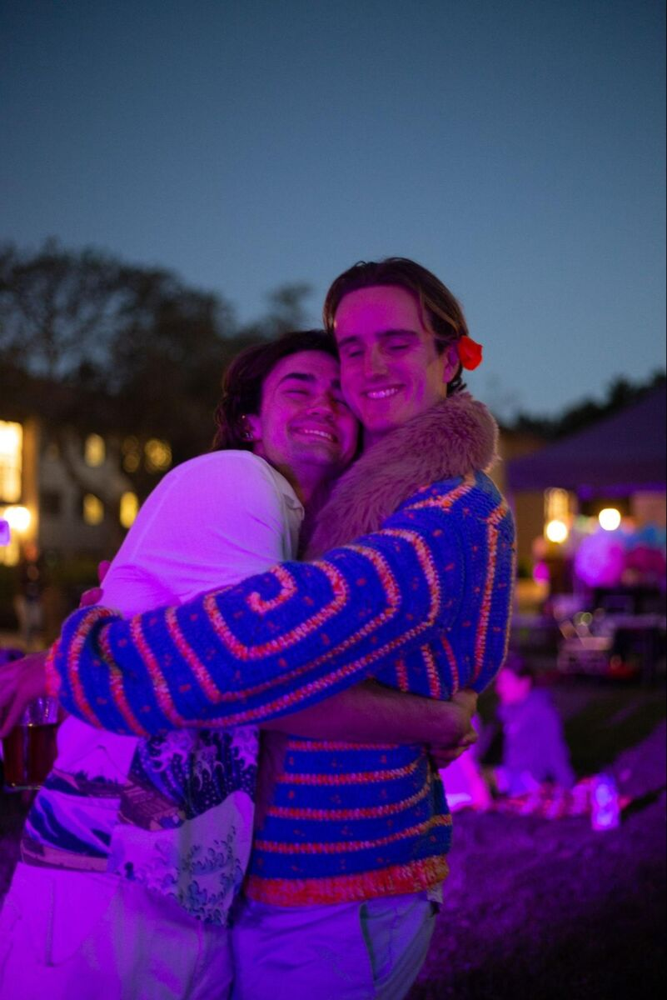
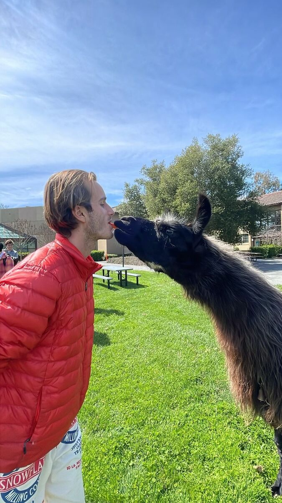
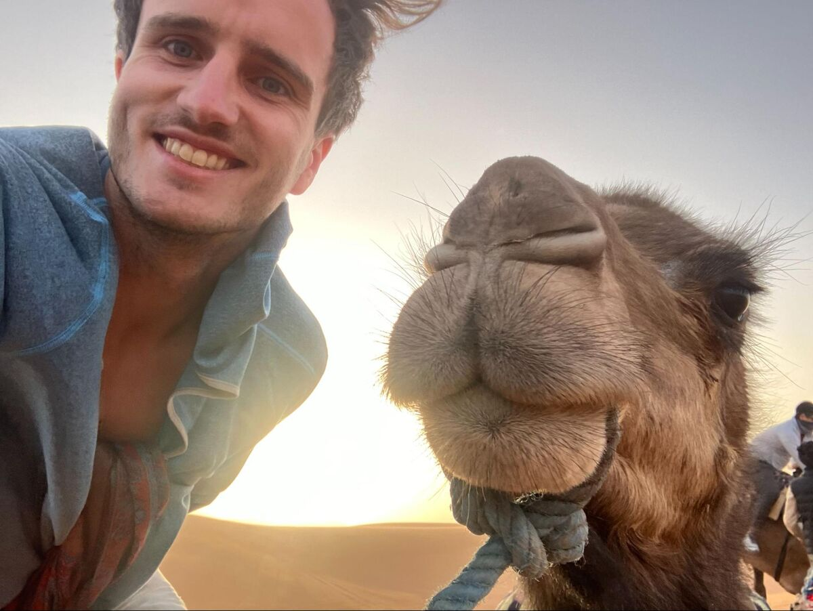
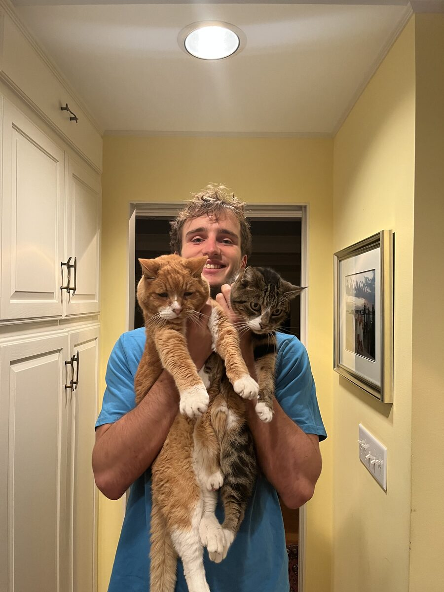
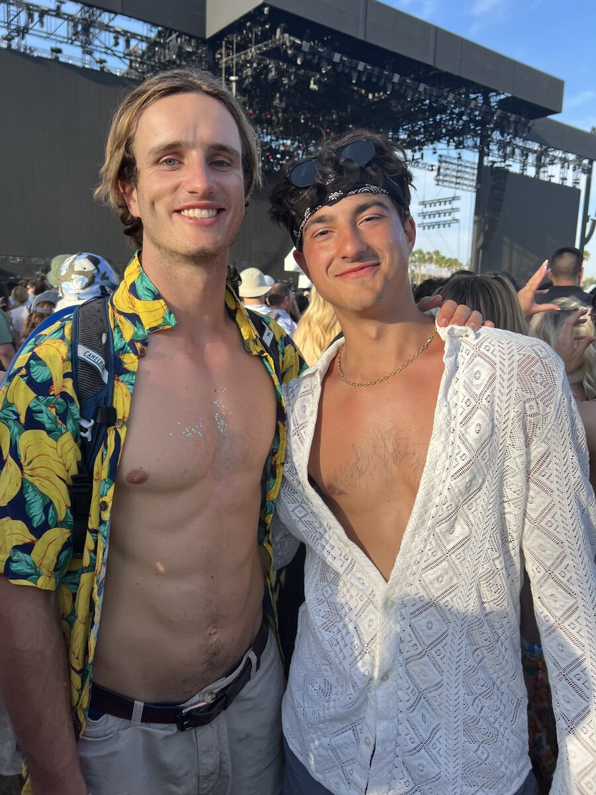
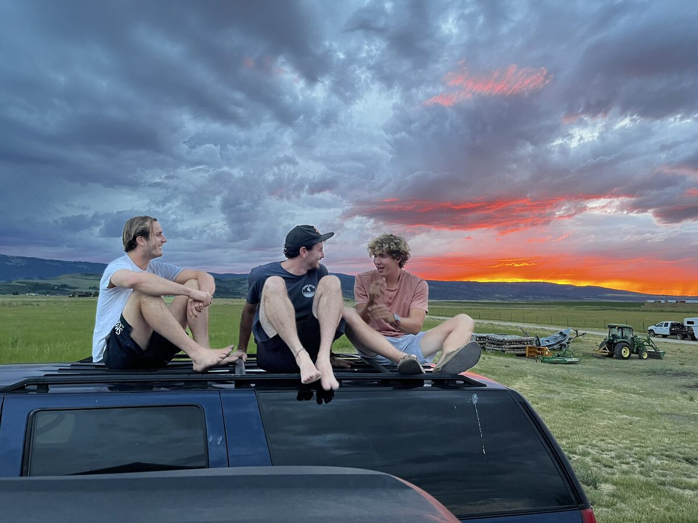
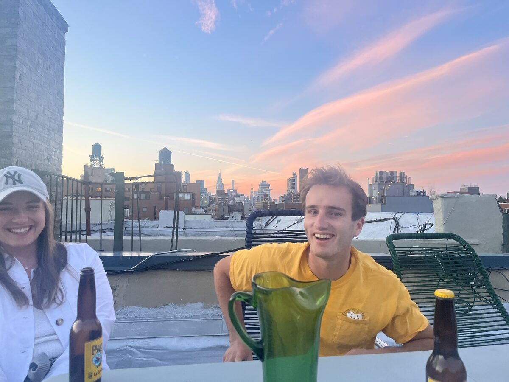
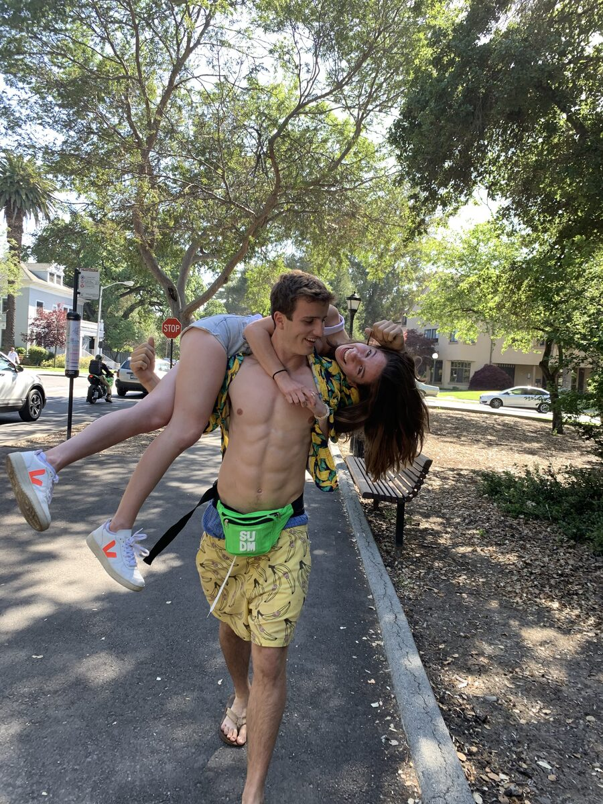
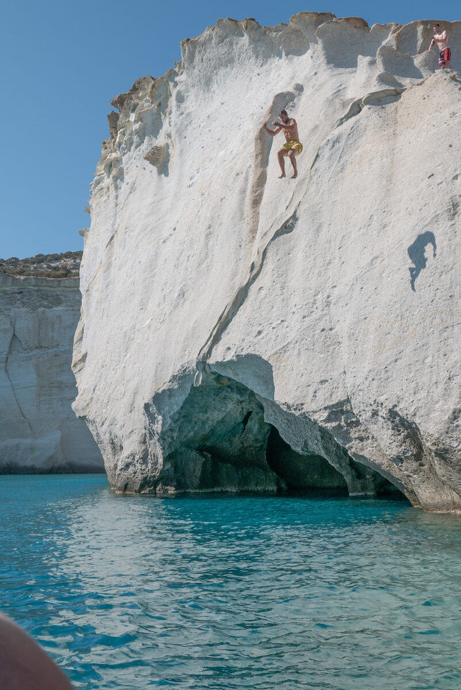

Date Robbie Doc
Last updated Oct 30 2026
Demographics: male, 26 (born 1999), hetero, SF. Founder at YC AI startup (insert meme here).
Fun Facts and Flexes
- I like to run barefoot. If you see me in GGP give me a high five!
- I love foraging for wild plants. In college I was frequently caught eating wild greens growing outside the lecture halls.
- I’m obsessed with Astral Codex Ten (see my favorite authors).
- I occasionally write on Substack, though I don’t claim it’s any good (favorite post here).
- I meditate a fair amount - I’ve done two ten-day silent retreats. Occasionally I faint while doing breathwork.
- I have four sisters :)
- I love teaching - in college I TAed five different classes and was a frosh RA.
- My first job out of college was trading bonds at Jane Street. I am prone to nerding out about math, AI, and finance.
- I occasionally freedive - I’ve been down 80 feet and held my breath for four minutes.
- Sometimes I teach yoga.
Things I’m Attracted To (I think these all describe me too, maybe that makes me narcissistic oops)
Eccentricity, Confidence: People think you’re weird and wrong about topics you’ve thought hard about. You stick out in crowds, and this doesn’t bother you.
Embodiment: You dance, meditate, sing, smell plants you pass on the street, jump in cold bodies of water, close your eyes to eat, enjoy physical touch.
Intelligence: I learn new things from you. Ideally you like math/science/engineering
Altruism: You treat strangers as friends as yourself.
Relationship Values
High trust: I will assume that you mean well, are telling the truth, and have my best interests at heart until I see overwhelming evidence to the contrary. I have no interest in keeping score on who pays the most or does the most chores or emotional labor.
Directness: If you’re weighing whether to be polite or to be frank, I usually prefer the latter. You can tell me an outfit is ugly even if I didn’t ask. We all want to be both kind and honest all the time, but I’m not smooth enough to achieve that. I will be forthcoming, occasionally at the expense of tact.
Independence: I am charismatic and extrovert-presenting, but by nature am an introvert and value my alone time. If me going off the grid for ten days for a meditation retreat once every year or two would be extremely burdensome for you, we might not be a great match.[1]
Your Potential Dealbreakers
Polyamory: I am poly
Kids: I want kids and I’m excited about having them sooner rather than later
Politics: Vaguely libertarian, don’t follow closely
Religion: I’m atheist; this isn’t important to me
On a first date we could:
- Have a picnic on the beach
- Play laser tag or go to Activate SF
- Read and discuss each other’s favorite essays
- Go for a hike or jog
- Have a home-cooked meal at one of our apartments
Contact info: (650) 474 9283. robbiethompson2018@gmail.com. I have no socials. Bonus points if you reach out with a date me doc of your own! Some pics I use on the apps









Notes #
To be explicit: I want an intimate and securely attached relationship, and I’m excited to support my partner when they need it. But I am attracted to people who can be happy alone. ↩︎